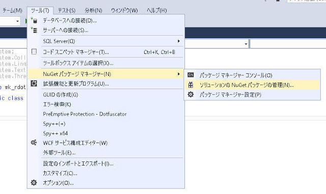
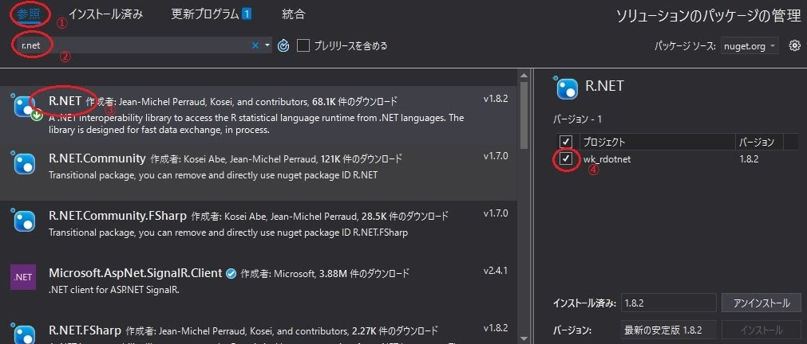
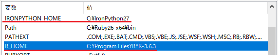
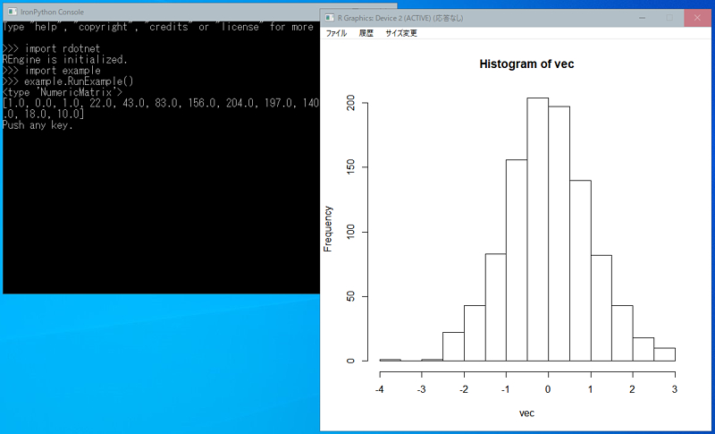

R.NETを使用すると、.NET Frameworkは同じプロセスで統計解析Rを使うことができます。
IronPythonから、R.NET経由で統計解析Rを利用するためのサンプル的なパッケージ「rdotnet」を作成しました。
実用に耐えうるかというと甚だ疑問ですが、サンプルプログラムとして参考にして頂ける幸いです。
作成手順は以下の通りです。
(1) こちらのソリューションでパッケージを作成しますので、ダウンロードしてください。
(2) 「wk_rdotnet.sln」をVisual Studio Communityで開きます。（今回の例では2017を利用しています）
(3) R.NETは、NuGetでプロジェクトにインストールします。
ツール ⇒ NuGetパッケージ マネージャー ⇒ ソリューションのNuGetパッケージの管理

①参照 ⇒ ②r.netを入力し検索 ⇒ ③R.NETを選択 ⇒ ④チェックボックスをON ⇒ ⑤インストール

(4) ビルドします。
(5) 「x64/***/rdotnet」フォルダをIronPythonの「Lib」フォルダにコピーします。
(6) 環境変数「R_HOME」（Rのインストールフォルダ）と「IRONPYTHON_HOME」（IronPythonのインストールフォルダ）を設定します。

(7) IronPythonのコンソールを起動し、以下を実行してみてください。R-3.6.3とR.NET 1.8.2の組合せで動作することを確認しました。
import rdotnet
import example
example.RunExample()
(8) rdotnetパッケージで使える関数は、「rdotnet.html」を見てください。
パッケージ「rdotnet」を構成する__init__.pyでポイントを説明します。
(1) パス設定と参照設定を適切に行った後（さらっと言いましたが、実はこの部分が結構面倒くさい）、以下を実行して得られるREngineを使います。ここが一番のポイントです。はっきり言って、残りのコードはREngineを使いやすくするための関数です。
RDotNet.REngine.SetEnvironmentVariables(...)
Engine = RDotNet.REngine.GetInstance()(2) IropnPythonでは、「SymbolicExpressionExtensionのメソッド」や「REngineExtensionのメソッド」をメソッドチェーンで簡単には使えないようなので便利関数を作っています。（以下で説明する__getattribute__("")を使えば見た目はわるいですが可能です）
・・・例えば
def AsCharacterMatrix(var):
if IsMatrix(var):
return RDotNet.SymbolicExpressionExtension.AsCharacterMatrix(var)
else:
return None
・・・例えば
def CreateCharacterVector(var):
global Engine
return RDotNet.REngineExtension.CreateCharacterVector(Engine, var)
・・・(3) REngine.Evaluate()の戻り値が、最後に与えられたコマンドの戻り値になっています。REngine.GetSymbol()が不要なので便利です。
var_ipy = rdotnet.Engine.Evaluate("var_r <- rnorm(100)")var_ipyには、var_rが入ります。（var_r <-部分がなくても）
あとは正しい型にキャストしてやれば、IronPython上で使えます。
(4) IronPython上のFunction（正確にはClosure）をfuncとします。Function.Invoke()は、以下のように実行できます。
func.__getattribute__("Invoke")()一方、Invokeの引数はSymbolicExpressionの配列です。IronPythonからC#に渡すには、以下のようにtupleを使います。option*を引数（SymbolicExpression）とします。
func.__getattribute__("Invoke")(tuple([option1, option2, option3]))
ちなみに、上の方法（__getattribute__("メソッド名")）でメソッドチェーンが使えるということです。少し見た目が悪いですが。
R.NETをIronPythonで使うのは、なかなか良いと思います。
ただし、グラフ表示においてウィンドウサイズをマウスで変更すると落ちる場合があります。スレッドがらみでしょうが勉強が足りず、うまくいきません。。。
あと、IronPython上の配列をRに渡す場合、ディープコピーが発生すると思いますので、大きなデータをRに渡す際には注意が必要です。（なるべくディープコピーの数を減らすとか）
C#から統計解析を利用するライブラリには、R.NET(Jean-Michel Perraud, Kosei)とR.NET Community(Kosei Abe, Jean-Michel Perraud)があります。「R.NET vs R.NET.Community in NuGet」には、「R.NETはR.NET.Communityに置き換えられました」とありますが、2020/4/30においてはR.NETが最新です。
Rの3.6系も今回のサンプルでは動作しました。とは言え、R.NETの最終更新日が3.6系の出る前なので、3.5系を使うのが安全かもしれません。
R.NETはVisual Studioは2017以上に対応しています。